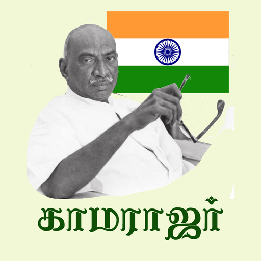

Introduction
K. Kamarajar, also known as "Perunthalaivar" (Great Leader), was a visionary leader and a statesman from Tamil Nadu, India. He was born on July 15, 1903, and dedicated his life to the welfare of the people.
Achievements
- Instrumental in bringing about educational reforms to promote literacy.
- Served as the Chief Minister of Tamil Nadu and implemented several pro-people policies.
- Promoted gender equality and worked for the upliftment of marginalized communities.
Tribute
We remember K. Kamarajar for his selfless dedication and unwavering commitment to the welfare of the people. His leadership and contributions continue to inspire generations.